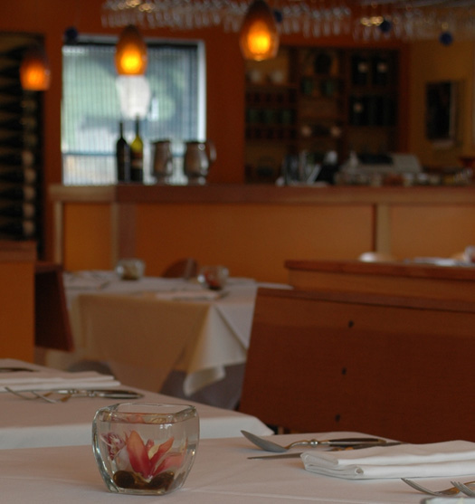

|
| Home Menu Directions Contact About Us |
|
Telephone 707.875.2700 Address 1580 Eastshore Rd. Bodega Bay, CA 94923 [map] Questions Please email us with any questions or request at: info@terrapincreekcafe.com Gift Certificates Gift certificates are available in any denomination. Give us a call, come on in, or email us at info@terrapincreekcafe.com. Job Opportunities TERRAPIN CREEK is always seeking motivated individuals looking for a challenging yet fulfilling work environment. Positions are available for both front and back of the house. A positive attitude, an appreciation for sustainable practices, and industry experience are mandatory. Please submit your resume at info@terrapincreekcafe.com with "Resume" as the subject line. |
 |
| 1580 Eastshore Rd., Bodega Bay, CA 94923 [map] | Tel: 707.875.2700 |